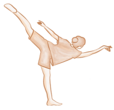
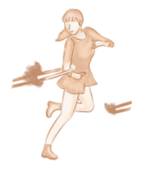

博物館
藝情嚴峻
暫別舞台後，表演工作者如何延續創作？

事件不能改變 觀點能改變
一開始會失眠
說得簡單 做起來無奈
我們都被寵壞
事件不能改變 觀點能改變
是否好過一些
睡覺睡到發霉 懶得做好準備
最困難的是減肥
孩子吵到崩潰 家裡沒有地位
最煩惱的是三餐
耐心等待
再多點自愛 保持樂觀
我們生活在台灣
——克里夫〈防疫小短歌〉
隨著疫情升溫，展演空間相繼熄燈，以往匯集掌聲的舞台失去生氣。藝文工作者慢下腳步，趁此空檔沉澱自身、回想初心，並積蓄創作能量，期待和觀眾再次相聚的那一天……
音樂人化無奈為創作
調適失序生活步調
克里夫：事件不能改變，觀點能改變
房間一隅，歌手克里夫（Cliff）撥弄著吉他和弦，將心思哼唱成歌。六年前，因為嚮往創作音樂的生活，他辭去工程師一職，靠演出、教學等收入維生。他獨立接案，跑遍全台表演，並在旅途中與人交流故事，激發更多創作靈感。
然而，自從本土新冠肺炎疫情開始失控，中央流行疫情指揮中心於5月19日宣布提升全國疫情警戒至第三級，克里夫努力經營的理想生活，一瞬間全亂了套。「疫情爆發前，平均一個月大大小小加起來八到十場演出，一直延續到年底，目前基本上都先喊卡了。」
暑假將至，本該進入活動旺季，習慣向外跑的克里夫卻只能待在家，不免感到焦慮、苦悶。他坦言，陸續得知活動取消或延期的那陣子，「其實滿可怕的，就一直處在什麼事情都不想做的狀態。」
待負面情緒平復後，克里夫創作「防疫小短歌」，緩緩唱出防疫期間的煩惱和無奈，像是居家工作的疲憊，以及照顧停課孩童的崩潰。克里夫反覆吟唱「事件不能改變，觀點能改變」，期許自己能盡快調整好心態，找回音樂創作的步調。除了線上直播演奏，他也希望利用這段宅在家的日子，嘗試過去想做卻沒實行的新創作。

空間限制成阻礙
舞者線上排練、教課皆不易
陳詣芩：創作者共思線上展演新可能
2021年，原是舞蹈家陳詣芩專心創作的一年，翻閱行事曆，裡頭有她一筆筆滿懷期待寫下的規劃。然而，原先預計在5月至7月進行的10檔舞蹈計畫和演出，多數因為疫情被迫取消或延期。
5月18日疫情爆發，回憶起當天前往排練場的路程，陳詣芩呆坐在捷運站，龐大的焦慮朝他襲捲而來，眼淚不自覺落下，不確定當天的排練、未來的表演能否如期進行。「那天完全沒有辦法認真做任何事情，你會覺得不知道該怎麼辦且沒有能力再負荷更多變數。」他淡淡地說。
然而疫情帶來的徬徨，並未持續籠罩陳詣芩，為了維持身體對舞蹈動作的記憶，他與朋友相約在線上練舞，進行居家的身體訓練。陳詣芩表示，無法到排練場練舞，身體能延展的空間不足，也無法連結他人的肢體、感受彼此的呼吸，許多舞蹈家正試圖從如此侷限的環境裡尋找方向。
「我們太晚了。」陳詣芩感嘆。被限制在家中、開始線上練舞之後，他才漸漸意識到台灣表演者對線上創作的準備不夠充分，難以因應來勢洶洶的疫情。相較同樣受疫情衝擊的歐美各國，他們早已將藝文活動轉為線上，而台灣多數的表演卻只能被迫取消、延期。
對此，陳詣芩與其他創作者開始積極交流，參加線上討論會，希望能夠借鏡國外藝術家的經驗，發展線上展演。他舉例，當表演轉換到線上，便可以選在任何時段開始，讓觀眾自由選擇進場和離場的時間。而創作者為表演所選定的時段，則可以配合作品內容，進而加強創作者想傳達的意義，「例如透過健身操發想作品，它可能就會在早上七點半。」陳詣芩笑說。
林瑞瑜：螢幕阻隔肢體接觸，現場氛圍難被取代
「七八上下，左右腳換中間、打開、收回來。」舞團「行行製作」負責人林瑞瑜喊著拍子，向參與線上課程的學生講解舞步。為了善用活動取消後的空檔、排解居家工作帶來的倦怠感，林瑞瑜決定開設身體課程，希望能提振自己的精神，也鼓勵大家多活動筋骨。
「大家這樣子可以嗎？」林瑞瑜用力向螢幕那端的學生喊著，為了讓全身姿勢在螢幕上清楚顯現，林瑞瑜必須遠離鏡頭，造成授課音量低，不易傳到學生耳中。他坦言，相比實體授課，遠距教學需要花費更多心力注意學生的學習狀況。而線上授課學習成效有限，學生很少發表即時的反饋，他也不好矯正學生的舞姿。
線上跳舞除了不利於師生溝通，也使專業舞者面臨排練困難。林瑞瑜描述線上排練的具體情況，編舞者會透過視訊指導舞者，但由於身處不同空間，往往無法掌握彼此相對位置、配合對方調整姿勢。
「在劇場裡面你會感受到空氣的凝結、演員的呼吸、舞者的張力。」林瑞瑜認為，實體演出具有獨特、細微的情感表達，無法被線上舞蹈取代。他仍然期待疫情緩解之後，大眾能夠重新走進劇場，親身體驗現場演出的情緒和節奏。
街頭藝人無法上街表演，溜溜球表演者楊元慶只得在家中不斷練習，維持手感。 影片／楊元慶提供

受疫情影響，楊元慶6月的商演、演講接連取消。熱愛表演的他透過線上直播，維繫與觀眾的互動。 圖／楊元慶提供

2014年楊元慶接連奪下「溜溜球抽餐巾、打硬幣」兩項金式世界紀錄。 圖／楊元慶提供
掌聲消失的街角
生計受損下街頭藝人轉戰網路
楊元慶：室外人潮消散，街頭藝人難以謀生
除了表演場館關閉，疫情升溫也導致戶外人潮消失，衝擊經常在商圈、觀光景點表演的街頭藝人。「今年這個疫情來得太快太猛。」臺灣街頭藝術文化發展協會（以下簡稱街藝協會）副理事長、溜溜球表演者楊元慶指出，去年因應防疫，民眾無法走進劇場，但仍可到戶外觀演，因此即便人潮減少，街頭藝人依舊願意站在街頭苦撐。然而，今年室外集會人數受限後，他們失去表演場地，頓時無法謀生。
防疫在家，楊元慶只能窩在堆滿樂高積木、 玩具車的客廳構思新表演。他站在巧拼上，一邊甩動溜溜球，一邊陪伴兩歲大的兒子楊硯玩耍。有次楊硯調皮，拿起手電筒照射楊元慶，竟意外觸發他的創作靈感，將聚光燈的意象與溜溜球結合。
在家的日子雖可以陪伴妻兒、開創更多表演招式，身為家中經濟支柱的楊元慶卻承擔不小壓力。街頭藝人不論如何精進技巧，只要沒有表演，便沒有收入，導致許多人只能靠存款、打零工過活，甚至開始借錢。即便政府提供紓困補助，楊元慶仍認為，由於街頭打賞沒有收入憑據，街頭藝人在申請補助時可能受阻，難以證明因疫情受到的財務損失。
楊元慶表示，街頭藝人也不能一味等待政府幫助，街藝協會近期便開始鼓勵街頭藝人往線上發展，透過影像和直播，主動連結螢幕對面的觀眾，希望能在這艱困的時日找到出路。
林捲兒：火舞直播增曝光度，線上交流與觀眾拉近距離
當鏡頭開啟，一片漆黑經由螢幕映入觀眾眼簾，隨後多點火光亮起，時而旋轉、時而上下擺動，從側照亮火舞街頭藝人林捲兒的臉龐。林捲兒經營火舞直播已邁入第五個年頭，遭逢疫情，直播成為他唯一的表演管道。
相比因疫情而開始直播的街頭藝人，林捲兒顯然更有經驗，掌握線上表演的竅門，「（直播）對我來說就是另外一個舞台。」林捲兒舉例，不同於現場火舞表演，他必須冷靜、專注完成高難度的動作，較少與觀眾互動，直播時他則會展現出活潑、親人的形象，藉此吸引觀眾目光。他補充，有時對火舞感到新奇、有興趣的觀眾，會進一步利用直播留言，向他分享當天的觀演心得。
雖然近期因為疫情，無法申請場地表演火舞，林捲兒還是會在直播唱歌，藉此精進自己的歌喉、學習與觀眾互動。「你有地方可以練習，又有營利可以收，何樂不為？」林捲兒說。面對疫情衝擊，街頭藝人仍可找尋機會表演，也能養精蓄銳，為疫情後的表演做打算。
線上轉型不只是街頭藝人在疫情期間的維生手段，林捲兒認為，直播也能幫助提高街頭表演的曝光度，許多線上觀眾曾跑到街頭現場支持表演，而原本只有一面之緣的現場觀眾，也能透過直播持續關注自己。唯一可惜的是，「現場會有掌聲，線上聽不到。」他感嘆，還是期盼疫情趕緊結束，才能夠回到街頭，享受火舞帶來的溫度和刺激。
表演者不減創作熱忱
盼大疫過後重回舞台懷抱
面臨疫情挑戰，許多藝文工作者開始向政府申請紓困補助，期望補助金能緩解疫情帶來的生計壓力。根據6月3日文化部公告的「藝文紓困4.0」申請辦法，藝文事業可依人員薪資或營運需求申請補貼，而自營或無固定雇主的藝文工作者，只要能提供財務損失證明，即可申請3萬元的補助金。
藝文紓困可說是解救藝文工作者的及時雨，但林瑞瑜認為，補助雖達到緩解失業的短期目標，卻不是長久經營的良方。工作者們還是要靠自己排解焦慮、找回創作規律，持續構想新作品，才能在瞬息萬變的藝文圈生存下去。
「疫情來了之後，反而很珍惜每一場的表演，因為不知道我們可以做到什麼時候。」林捲兒說。疫情雖打亂表演者的生活步調，將行動限制在屋內、螢幕之中，卻沒有抹滅他們的創意與熱忱。無論是音樂人、舞者或是街頭藝人，這群藝文工作者一面思索適合疫情時代的表演形式，一面盼望舞台再次開放的日子。